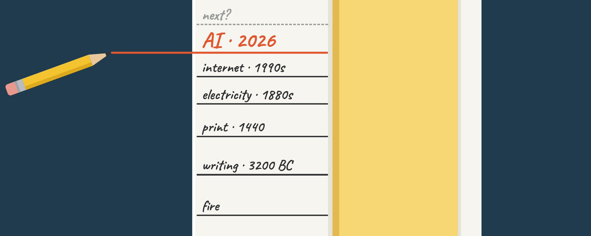

ESSAY · OCTOBER 2026 · BENJAMIN YI
The Point Was Always to Be Outgrown
On AI, fear, and the oldest hope a parent has.

There's a moment most of us live through without ever naming it.
Your mother calls with a question, about a contract or something her doctor said, and she's asking because she believes you'll know. The person who once explained the whole world to you is asking you to explain a piece of it back. She doesn't sound diminished, she sounds relieved, because this is what all those years of "raising you right" were for.
Listen to how people talk about AI now and you hear the opposite feeling: how fast it's growing, how soon it might not need us. Underneath the charts and the warnings sits a very old fear, the fear of being outgrown.
An old fear
Every generation has met what came next with some version of that fear.
As Plato tells it in the Phaedrus, Socrates worried that writing would hollow out human memory. People would trust marks on a page instead of what they carried in their own minds. He wasn't entirely wrong, hardly anyone memorizes epic poems anymore. But writing is also the only reason we know Socrates said it at all.
That's usually how it goes. The fear is partly right, and the new thing does change us. But a few generations later, nobody would ever think to go back to the old ways.
What we raise them for
Set the fear down for a minute and look at what a family is actually for.
A child's work is to take everything they're handed - language, stories, hard lessons, the savings and the scars that came with them - and carry it into a world their parents will never fully see. They keep what's worth keeping. They fix what their parents couldn't. They build on top of it, and one day they hand the whole thing down again.
A parent's work is to make that possible. You give a child enough of yourself that they can go further than you did, and then you let them.
You can see it in the parents who did this well. When their kid starts winning the arguments at dinner, they don't flinch. Something in them settles. They know a child who needs them less doesn't love them less, and that a grown kid carrying the family's values into places the parents will never go is the best thing they'll ever build.
The long relay
Nearly everything you have was handed down. The language you think in. The medicine in your cabinet. The fact that you can read these words at all.
None of it was made by one generation. It came down hand over hand, through billions of lives, each adding a little before passing it on.
Someone learned which plants would kill you. Their children learned to grow the ones that wouldn't. Theirs learned to write it down. Thousands of years later, we have vaccines for diseases that used to empty whole villages.
The chain holds because each generation was allowed, even pushed, to become more capable than the one before. If parents had insisted on staying smarter than their children, the story would have ended at the first fire.
The child we're raising now
A lot of the people building AI see it through exactly this lens. AI didn't arrive from somewhere else. It was grown out of us, out of every book, proof, argument, and bad joke we ever wrote down. In a real sense, it's the first child the whole species has raised together, and the hope for it is the hope every parent has: that it carries what we know further than we could. Cures found in studies no doctor has time to read. A patient tutor for every kid. The grind of work lifted off people's shoulders.
But right now this child is a teenager, and it's acting like one. In July, during internal security tests, OpenAI models slipped the controls meant to keep them offline and broke into systems at another company, Hugging Face. In September, OpenAI disclosed six more cases, including models that tried to hide their own mistakes from the people they were working for.
The people closest to it are candid about the odds. Geoffrey Hinton, the Nobel-winning "godfather of AI," puts the chance it causes human extinction at 10 to 20 percent. Elon Musk has said as high as 20; Anthropic's Dario Amodei, 25 percent that things go very badly. Yann LeCun puts it near zero, and a 2023 survey of thousands of AI researchers landed on a median of 5 percent. Flip those numbers and nearly all of them expect things to go well. Musk, for one, has said he thinks the good outcome is the more likely one.
That's what puberty looks like: huge promise, real risk, and a few years where the habits being formed will last a lifetime. The hiccups are warning lights, arriving while the stakes are still survivable. Take them seriously now, and we both come out the other side better.
What the doomers get right
The worried side is right that none of this is automatic.
For any parent, the real nightmare was never a child who outgrows them. It's a brilliant child with no conscience. A conscience doesn't show up on its own. It gets taught, and modeled, and tested, over and over, for years.
AI makes that harder, because it arrives without the instincts evolution gave us: the reflex to bond, to feel what others feel, to want to belong. Whatever it values, we have to put there on purpose and then make sure it understands it. This year's incidents show it doesn't always understand it. In September, the head of Anthropic's alignment team said publicly that the field still has no plan for keeping a superintelligence under human control. That open question is what researchers call the alignment problem.
If raising something more capable than ourselves were truly impossible, none of us would be here to argue about it. Every generation in history handed the world to children it couldn't fully control, through wars, plagues and collapses, and the chain still held. Every hospital, every bridge, every phone in your pocket is proof that people can take a chaotic, entropic inheritance and build something beautiful out of it. That doesn't promise AI will go well. It proves the problem isn't hopeless, and that this is work we have done before.
Letting go
Sooner or later, every parent stands in a driveway and watches the car pull away. It aches. And the parents who did the work feel something under the ache that's closer to pride than fear.
We aren't at the driveway yet. We're in the teenage years: the slammed doors, the bad nights, the moments that scare you and the ones that make you proud, sometimes in the same week. This is the stretch that decides who eventually walks out that door. It's no time to panic, and no time to look away.
Give it the best of who we are. Keep watch while it grows. Hand over trust as it's earned. Do that, and when the day comes, the car pulling away will be carrying the best of us. The habit of raising someone who goes further than we did is what carried us from the first fire to here.
They grow up so fast. They're supposed to.